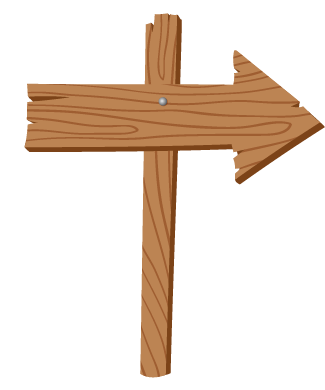

Historia de la gimnasia



Origen
Bienvenidos al origen
de la gimnasia,
el deporte que surgió
de lo natural.
La gimnasia se remonta a la prehistoria debido a que el hombre en esa época utilizaba su cuerpo como herramienta para subsistir, ya que ellos generaban movimientos de esfuerzo físico diariamente.
Tanto esfuerzo hacía que sus cuerpos estuvieran en buena forma con mucha fuerza y agilidad para así poder conseguir sus alimentos y escaparse de los depredadores.
El origen de la gimnasia se da debido a que los hombres realizaban movimientos naturales como saltar, correr, trepar árboles, entre muchos otros.


Al Desnudo


Los griegos comienzan
a darle importancia a
los movimientos físicos y los
incluyen en la educación.

Estilo de vida en la Antigua Grecia.


Exilio


Los romanos conocen
la gimnasia debido
a su gran expansión
por Europa, llegando a
Grecia.
En el imperio romano, en su etapa de expansión llegan hasta el territorio de los griegos, donde toman los movimientos que utilizaban en esta región para entrenar y preparar a los soldados para la guerra y se dieron cuenta que el uso de la gimnasia ayuda a mejorar la estabilidad del cuerpo tales como la salud en general, el equilibrio y la flexibilidad de los soldados.
Para los entrenamientos empezaron a surgir los primeros aparatos donde se podían hacer movimientos los cuales hoy hacen parte de la gimnasia, por ejemplo el caballo con arcos el que consiste en subir y bajar de un caballo rápidamente con facilidad; estaban también la escalera y otros que enseñaban al vencimiento de obstáculos, a esto le pusieron el nombre de Calistenia que hoy en día se conoce como un deporte.
El año 393 las olimpiadas fueron prohibidas por petición de los cristianos, decían que era tedioso por tanto tiempo el cual le dedicaban y porque era al desnudo o con muy pocas prendas. Así acabándose la gimnasia en el Imperio Romano.


Enigma


Debido a la prohibicion de la
gimnasia por tediosa según los
romanos, el deporte se ve
reflejado en los arlequines.
La mayor parte de lo que era la gimnasia en esta época se podía ver representada en los arlequines, en donde entretenían y hacían divertir a todos los ciudadanos y reyes, contando chistes y haciendo malabares, siendo muy apreciados por los reyes.
Aparte estaban los bufones los cuales eran crueles y despiadados con las personas se destacaban por su increíble acrobacia y agilidad esta era presenciada cuando robaban algo ya que nadie era capaz de capturarlos.
Gimnasia Moderna
Friederich Ludwing Jahn considerado
el padre de la gimnasia, el cual creó
los primero aparatos como la viga,
la barra fija y las barras paralelas en 1811.
Nadia Comaneci.